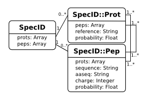

SpecID is a mixin (or can be thought of as an interface) for objects containing peptide and/or protein identifications.

mspire can read several different spectral ID formats. Each is farmed out to a format specific object that mixes in the SpecID module and whose identifications mixin the SpecID::Pep or SpecID::Prot module.
require "spec_id"
specid = SpecID.new(["file1.srf", "file2.srf"]) # array of srf files
specid = SpecID.new("file1.srf") # single srf file
specid = SpecID.new("bioworks.xml") # Bioworks multiconcesus output
specid = SpecID.new("peptide_prophet.xml") # Peptide Prophet
specid = SpecID.new("file.sqt") # a sqt file
specid = SpecID.new("percolator.sqt") # a sqt file after percolator
specid = SpecID.new("file.sqg") # a sqt group file
specid.peps # => an array of peptide identifications
specid.prots # => an array of protein identifications
specid.hi_prob_best # => boolean: high probability best?
# peptide prophet == true
# percolator (q-value) == true
# bioworks == false
specid.filename # => the file it was derived from
Each of the parsers for these formats ensures that each peptide ID links up to its associated proteins and each protein ID links to associated peptide ID's with no redundancy. The SpecID module means that you can get at the ID's much faster than having to traverse the proper object heirarchy that is built for each object type.
A simple example will demonstrate how much simpler it is to use the SpecID module rather than traversing the object heirarchy (which is available if you need it):
# using the SQT object heirarchy
sqg = SQTGroup.new("file.sqg")
sqg_object.sqts.each do |sqt|
sqt.spectra.each do |spectrum|
spectrum.each do |match|
match.xcorr # <- do something with the match
match.loci.each do |locus|
locus.reference # <- do something with each protein ID
end
end
end
end
# using the SpecID module
specid = SpecID.new("file.sqg")
specid.peps.each do |match| # <- a pep is really a SQT::Match!
match.xcorr
end
specid.prots.each do |locus| # <- a prot is really a SQT::Locus!
locus.reference
end
This kind of shared interface is especially handy when you are dealing with different file formats.
A SpecID::Pep responds to basic information about the identification:
specid.peps.each do |pep|
pep.prots # SpecID::Prot proteins associated with the peptide
pep.sequence # a sequence showing leading and tailing
# amino acids, e.g.: K.AASEQENCE.A ('-' for none)
pep.aaseq # the bare amino acid sequence, e.g.: AASEQENCE
pep.charge # charge of the hit peptide
pep.probability # probability of the hit being accurate
end
specid.peps.sort # sorted by aaseq (<=> defined in terms of aaseq)
# sort from worst to best hit:
sorted = specid.peps.sort_by {|pep| pep.probability }
unless specid.hi_prob_best
sorted.reverse!
end
SpecID::Pep.protein_groups_by_sequence(['AASEQ', 'PEP', 'TIDE'], file.fasta)
A SpecID::Prot object responds to basic information about the protein information:
specid.prots.each do |prot|
prot.reference # unique identifier (the fasta header until first space)
prot.probability
prot.peps # the peptide hits
end
specid = SpecID.new(["file1.srf", "file2.srf", "file3.srf"])
specid.class # => SRFGroup
specid.is_a? SpecID # => true